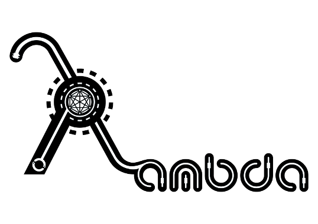

..is an independent consulting think tank specializing in advanced information technologies.
We design, develop, implement and integrate highly-available, scalable & secure distributed systems. We also operate them. We do research and development on network and systems security, reliability and accountability and design new ways for systems profiling, monitoring and in-depth analysis at scale. We're passionate about the work we do and the products we deliver. We pride ourselves to be driven by the desire to solve difficult problems with simple,
creative ideas, expert knowledge, beautiful engineering and outstanding social skill.